- Add: Opens the individual activity creation form for the currently selected activity type.
- Add Bulk: Opens the bulk activity workflow, where a sample file can be downloaded, populated, and uploaded.
- Activity Allocated Hours: The creation forms display this field for planned/allocated time.
- Assign Activity to: The forms display an assignment control. In the supplied examples it is shown as “All User are selected”.
- Save and Add More: Saves the current activity and keeps the creation workflow available for another activity.
- Cancel: Exits the creation form without saving the current entry.
- Global is the active activity scope.
- The activity list displays existing global activities.
- Add Bulk is available beside Add for bulk creation.
- Activity is shown as a required field.
- Activity Allocated Hours is displayed in hh:mm-style notation.
- Assign Activity to is shown as a required assignment control.
- Use Save and Add More to save and continue, or Cancel to exit.
- Use Add Bulk when multiple activity records need to be prepared through the upload workflow.
- The Global tab remains selected while starting the bulk operation.
- Download the sample file before preparing the bulk data.
- Upload the completed file using the Import File control.
- The displayed instructions state that up to 1,000 activity records can be imported in a single upload.
- The screenshot shows Activity Name and Assign Activity as mandatory fields in the Global bulk template guidance.
- Project Specific is the active tab.
- Existing activities show their associated project.
- Add starts individual Project Specific activity creation.
- Select the Project first.
- Enter the Activity name.
- Enter Activity Allocated Hours.
- Select the users to whom the activity should be assigned.
- Save and Add More saves the entry and allows another activity to be added.
- Use this option for multiple Project Specific activity records.
- The activity list contains Project information, confirming the project-level context.
- Download and complete the supplied sample file.
- Project must be provided for Project Specific bulk records.
- Assign Activity uses a comma-separated list of user email addresses according to the displayed instructions.
- The displayed bulk upload limit is up to 1,000 activity records in one upload.
- Task Specific is the active tab.
- The displayed grid contains Activity, Project, Task, assignment, and hour-related columns.
- Add opens the Task Specific activity form.
- Select the Project.
- Select the Task associated with that project.
- Enter the Activity.
- Enter Activity Allocated Hours.
- Assign the activity to the required users.
- Save and Add More or Cancel as appropriate.
- Use Add Bulk to prepare multiple Task Specific activity records.
- The Task Specific grid retains Project and Task context.
- Download the sample file and enter the activity details.
- Task must be supplied for Task Specific bulk records.
- The displayed instructions require the assignment field and describe it as a comma-separated list of user email addresses.
- The displayed bulk upload limit is up to 1,000 activity records.
- Global Task Specific is the active tab.
- Existing records show a Task association.
- Add starts individual Global Task Specific activity creation.
- Select the Global Task.
- Enter the Activity.
- Enter Activity Allocated Hours.
- Assign the activity to the required users.
- Use Save and Add More to save and continue, or Cancel to exit.
- Select Global Task Specific before using Add Bulk.
- The supplied screenshot demonstrates the Add Bulk entry point.
- A separate Global Task Specific bulk-upload panel screenshot was not provided, so this KB does not infer its fields or instructions.
- Open the required activity-type tab.
- Select Add Bulk.
- Select Download Sample File.
- Populate the downloaded template using the fields and instructions displayed in the corresponding bulk panel.
- Save the completed file.
- Use the Import File / Upload control to upload the completed file.
- Follow any validation or import result shown by the application.
- The screenshots use different example activity names, projects, tasks, and hour values; these are examples shown in the UI and should not be treated as required values.
- The exact fields shown depend on the selected activity type. In particular, Project, Task, and Global Task appear only where their respective scope requires them.
- The bulk instruction screenshots explicitly describe which fields are mandatory/optional for Global, Project Specific, and Task Specific bulk uploads.
- For Global Task Specific bulk creation, only the Add Bulk entry point is shown in the supplied material; the corresponding bulk form and its field rules are not included.
- Do not reuse a screenshot from one activity type as an explanation for another type. Each screenshot in this KB is paired with the activity type and screen state it actually demonstrates.
Activity Creation Module
Creating activities across all supported activity types
This document explains how to create activities from the Activities module, covering the four activity types shown in the provided screenshots: Global, Project Specific, Task Specific, and Global Task Specific. It also explains the Add and Add Bulk entry points and the fields visible in the creation forms.
Source and screenshot scope: The procedures and terminology below are based on the screenshots provided for this KB. No behavior not demonstrated in those screenshots is assumed.
1. Activity Types
| Activity Type | Where it applies | Add form | Bulk creation |
| Global | Activities not tied to a project or task in the displayed form. | Activity + allocated hours + assignment. | Download sample, complete the file, then upload it. |
| Project Specific | Activities associated with a selected project. | Project + activity + allocated hours + assignment. | Download sample, complete the file, then upload it. |
| Task Specific | Activities associated with a selected project and task. | Project + task + activity + allocated hours + assignment. | Download sample, complete the file, then upload it. |
| Global Task Specific | Activities associated with a selected global task. | Global task + activity + allocated hours + assignment. | Add Bulk entry point is shown; a bulk form is not included in the supplied screenshots. |
2. Common Activity-Creation Concepts
3. Global Activities
Use the Global tab when creating an activity at the global level. The supplied screenshots show both individual creation and bulk creation.
Screenshot 1 – Global Activities – Add button
Screenshot 1 – Global Activities – Add button.
The Activities window is open on the Global tab. The Add button is highlighted at the top of the list. Selecting Add starts individual Global activity creation.
Screenshot 2 – Global – Add Activity form
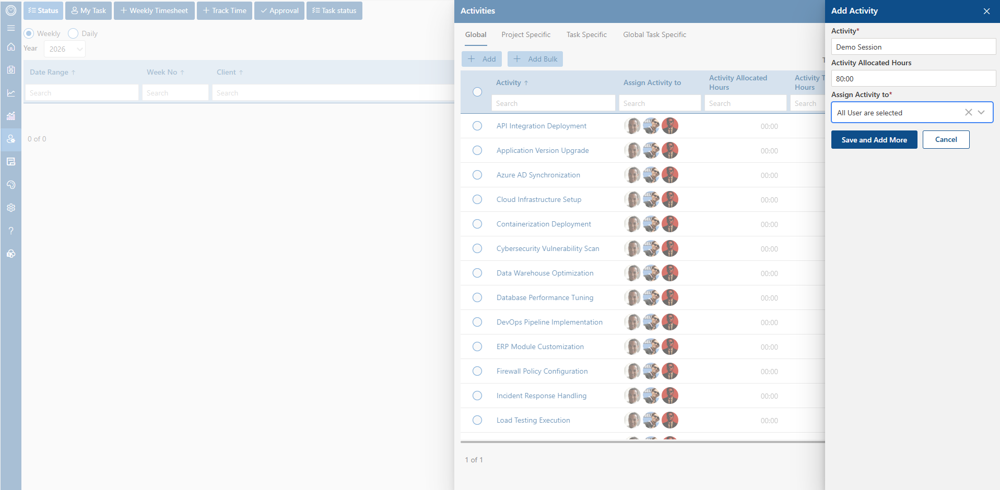
Screenshot 2 – Global – Add Activity form.
The Add Activity panel for a Global activity is displayed. The form contains Activity, Activity Allocated Hours, and Assign Activity to. The example uses “Demo Session” as the activity and “80:00” as allocated hours.
Screenshot 3 – Global Activities – Add Bulk button
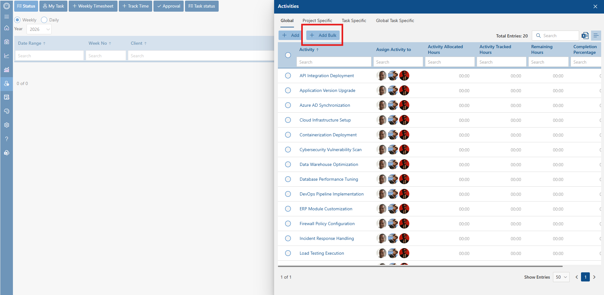
Screenshot 3 – Global Activities – Add Bulk button.
The Global tab is displayed with Add Bulk highlighted. This entry point starts the bulk activity workflow for Global activities.
Screenshot 4 – Global – Add Bulk Activity form
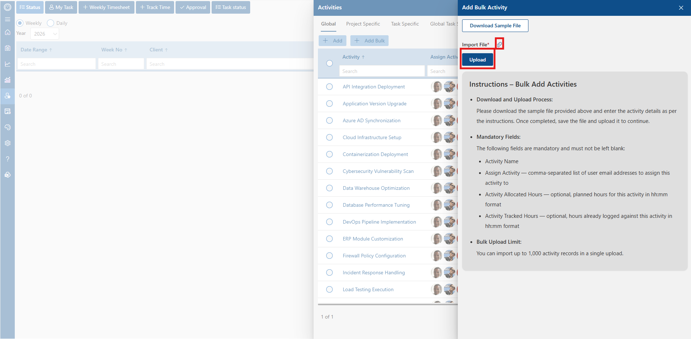
Screenshot 4 – Global – Add Bulk Activity form.
The Add Bulk Activity panel is displayed for Global activities. It provides Download Sample File and an Import File upload control. The instructions identify Activity Name and Assign Activity as mandatory, while Activity Allocated Hours and Activity Tracked Hours are described as optional.
4. Project Specific Activities
Use the Project Specific tab when an activity must be associated with a particular project. The screenshots show individual creation and bulk creation.
Screenshot 5 – Project Specific Activities – Add button
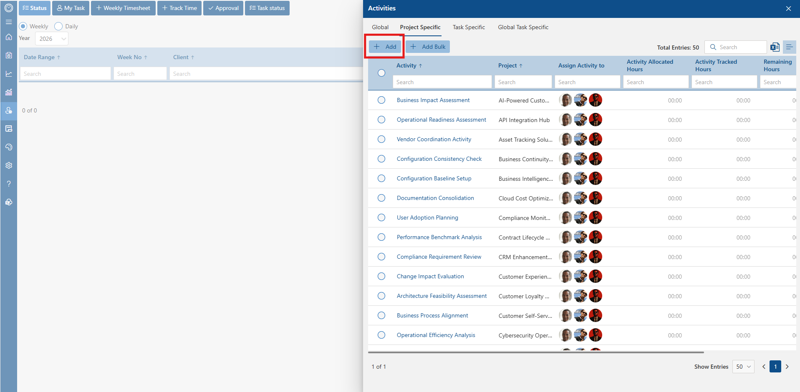
Screenshot 5 – Project Specific Activities – Add button.
The Project Specific tab is selected and the Add button is highlighted. The grid includes a Project column, which distinguishes this activity type from Global activities.
Screenshot 6 – Project Specific – Add Activity form
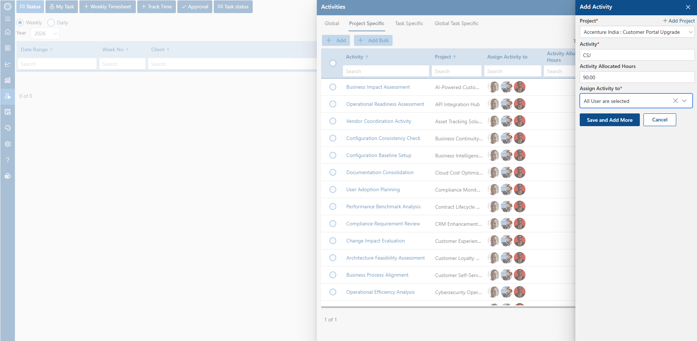
Screenshot 6 – Project Specific – Add Activity form.
The Add Activity panel shows Project as a required field, followed by Activity, Activity Allocated Hours, and Assign Activity to. The example selects a project and enters “CSJ” as the activity with “90:00” allocated hours.
Screenshot 7 – Project Specific Activities – Add Bulk button
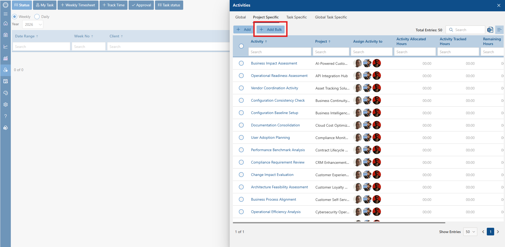
Screenshot 7 – Project Specific Activities – Add Bulk button.
The Project Specific tab is displayed with Add Bulk highlighted. This starts the bulk-upload workflow for project-associated activities.
Screenshot 8 – Project Specific – Add Bulk Activity form
Screenshot 8 – Project Specific – Add Bulk Activity form.
The Add Bulk Activity panel for Project Specific activities provides Download Sample File and Upload controls. The displayed instructions list Activity Name, Project, and Assign Activity as mandatory, with allocated and tracked hours described as optional.
5. Task Specific Activities
Use the Task Specific tab when an activity is associated with both a project and a task. The screenshots show individual and bulk creation.
Screenshot 9 – Task Specific Activities – Add button
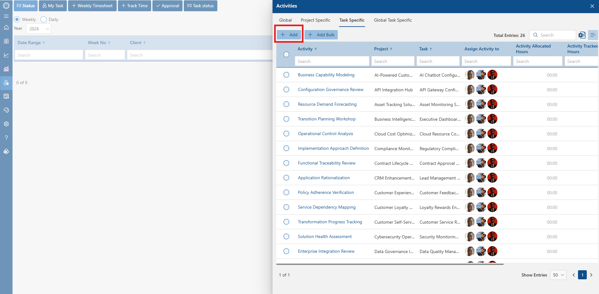
Screenshot 9 – Task Specific Activities – Add button.
The Task Specific tab is selected and Add is highlighted. The list contains separate Project and Task columns, showing that the activity is tied to a task within a project.
Screenshot 10 – Task Specific – Add Activity form
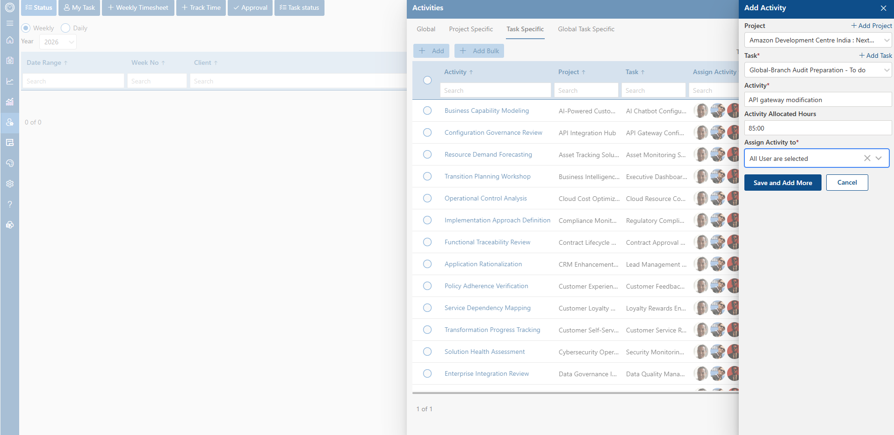
Screenshot 10 – Task Specific – Add Activity form.
The Add Activity panel contains Project, Task, Activity, Activity Allocated Hours, and Assign Activity to. The example selects a project and task, enters “API gateway modification”, and sets allocated hours to “85:00”.
Screenshot 11 – Task Specific Activities – Add Bulk button
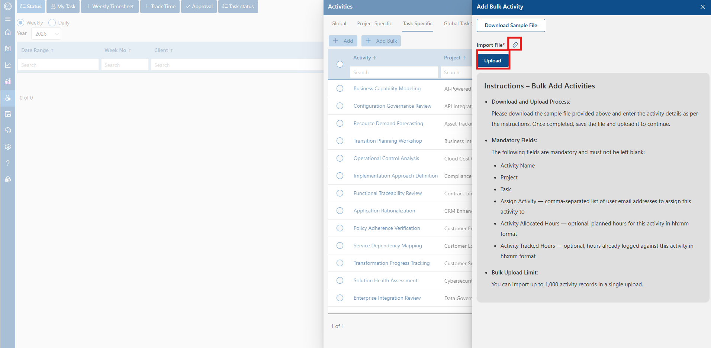
Screenshot 11 – Task Specific Activities – Add Bulk button.
The Task Specific tab is shown with Add Bulk highlighted. This begins the bulk-upload workflow for activities associated with tasks.
Screenshot 12 – Task Specific – Add Bulk Activity form
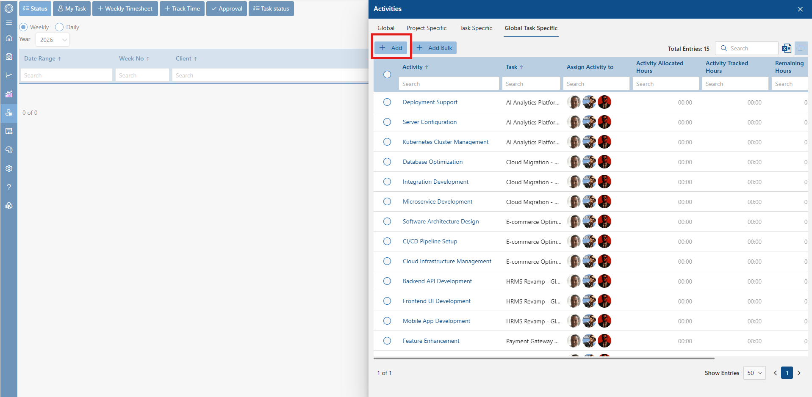
Screenshot 12 – Task Specific – Add Bulk Activity form.
The Add Bulk Activity panel is shown for Task Specific activities. The instructions identify Activity Name, Task, and Assign Activity as mandatory, while Activity Allocated Hours and Activity Tracked Hours are described as optional.
6. Global Task Specific Activities
Use the Global Task Specific tab when the activity is associated with a Global Task. The supplied screenshots show the individual Add workflow and the Add Bulk entry point.
Screenshot 13 – Global Task Specific Activities – Add button
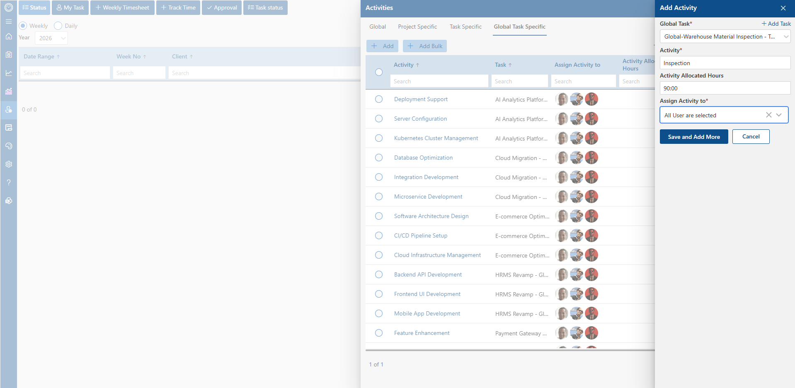
Screenshot 13 – Global Task Specific Activities – Add button.
The Global Task Specific tab is selected and Add is highlighted. The grid contains Activity and Task-related columns, indicating the global-task context.
Screenshot 14 – Global Task Specific – Add Activity form
Screenshot 14 – Global Task Specific – Add Activity form.
The Add Activity panel shows Global Task as a required field, followed by Activity, Activity Allocated Hours, and Assign Activity to. The example selects a Global Task, enters “Inspection”, and uses “90:00” allocated hours.
Screenshot 15 – Global Task Specific Activities – Add Bulk button
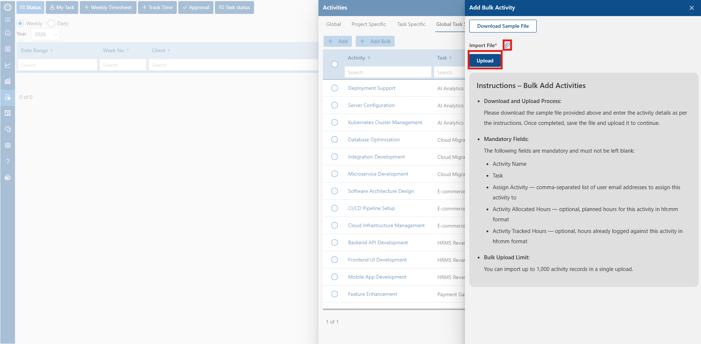
Screenshot 15 – Global Task Specific Activities – Add Bulk button.
The Global Task Specific tab is displayed with Add Bulk highlighted. This confirms that a bulk-creation entry point is available for this activity type.
7. Bulk Activity Creation – General Workflow
The supplied Global, Project Specific, and Task Specific bulk screenshots show the same general workflow: open Add Bulk, download the sample file, populate the required activity information, save the file, and upload it.
8. Field Summary by Activity Type
| Type | Context field | Activity | Allocated Hours | Assign Activity to |
| Global | — | Shown | Shown | Shown |
| Project Specific | Project | Shown | Shown | Shown |
| Task Specific | Project+Task | Shown | Shown | Shown |
| Global Task Specific | Global Task | Shown | Shown | Shown |